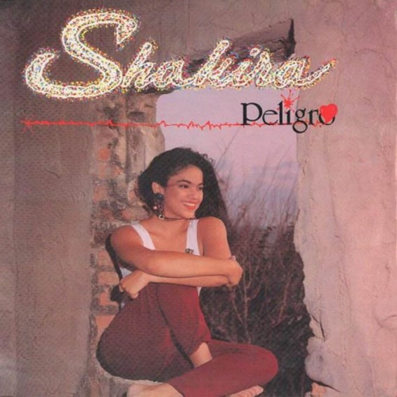

Actriz
Cantante
Modelo
Shakira
Empresaria
Compositora
Filantropa
1991
Con catorce años de edad lanzó su primer álbum titulado Magia, con canciones escritas por ella misma. Logrando vender solamente 1000 unidades.

A los dieciseis saca su segundo álbum, titulado Peligro. Debido a las malas ventas del albun decide tomar un receso musical para terminar sus estudios.
1993
1996
Publicó su primer álbum de estudio oficial, titulado Pies descalzos, que gracias a la colaboración de Luis Fernando Ochoa, la convirtio en una figura de la musica hispanoamericana.

Publicó su segundo álbum de estudio, titulado ¿Dónde están los ladrones?. Con un millon de copias vendidas en estados unidos.
1998
2001
Publicó su tercer álbum de estudio y el primero "bilingüe", titulado Laundry Service, el cual fusionó pop y rock con elementos de la música latina.
lanzó su cuarto álbum de estudio, titulado Fijación oral vol. 1. Llegó al primer lugar de ventas en México, Colombia, Argentina, España y varios países de Latinoamérica.
2005
2005
Lanzó su primer album completamente en inglés, titulado Oral Fixation vol. 2. Debutó en la posición número cinco en los Estados Unidos dentro del Billboard 200
lanzó su sexto álbum de estudio, titulado she wolf/loba. El álbum ha sido un éxito en las listas y desde entonces ha sido certificado disco de Oro en Rusia
2009
2010
Lanzó su séptimo álbum de estudio, titulado Sale el sol, debutando en las primeras posiciones de los charts.
Lanzo su octavo álbum de estudio y primer álbum homónimo titulado Shakira. El álbum debutó en la posición número 2 en Billboard 200.
2014
2017
Lanzó su naveno álbum de estudio, titulado El Dorado. El álbum debutó en las primeras diez posiciones en las listas de Argentina. Debutó también como número dos en la lista Top Latin Albums de Estados Unidos.